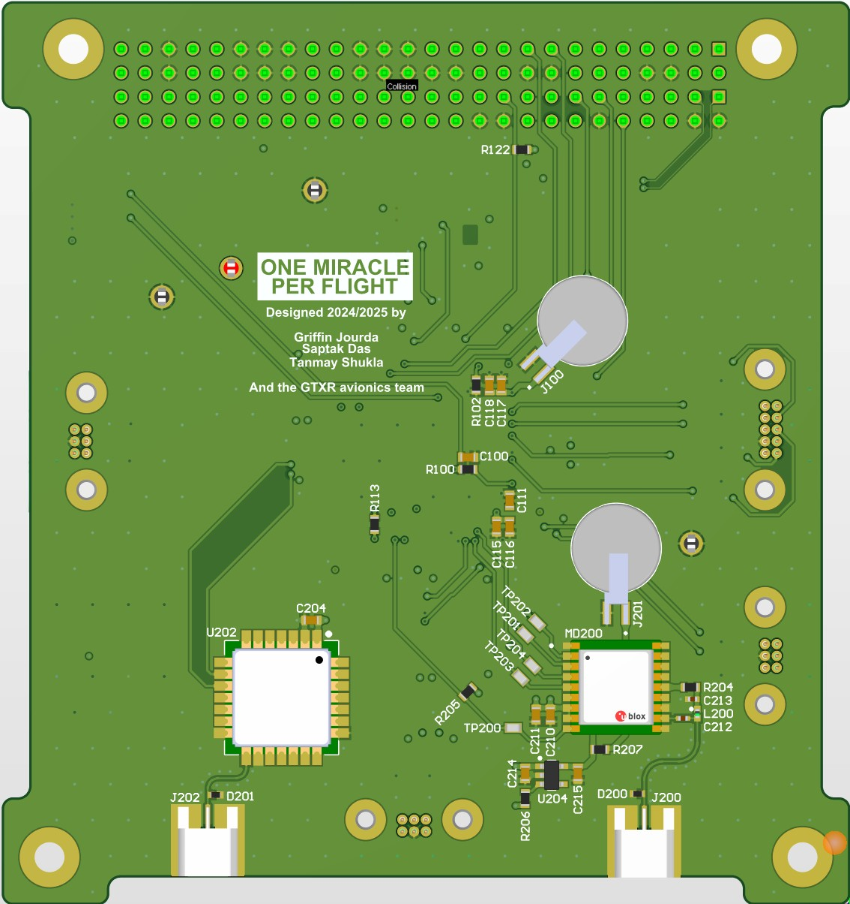

ADCS Flight Computer for Georgia Tech Rocketry
Attitude Determination & Control Systems for the First Collegiate Two-Stage Rocket to the Karman Line
As Avionics Hardware Lead, I designed and routed the ADCS flight computer PCB from scratch in Altium, integrating high-speed IMU sensors, barometers, GPS modules, robust power distribution with multiple voltage rails, and telemetry systems for real-time data transmission to ground stations.
Co-developed the embedded software implementing extended Kalman Filter algorithms for real-time 6-DOF state estimation and flight control, enabling precise attitude determination during supersonic flight phases.


All Projects
64-Bit Calculator RTL Design & VLSI Implementation
Full-stack digital design from RTL specification through physical implementation, demonstrating complete ASIC design flow competency.
RTL Design
- FSM-based control with synchronous resets
- Dual-bank SRAM interface for I/O
- 64-bit arithmetic operations
Verification
- UVM testbench with driver/monitor/scoreboard
- Achieved 99% code coverage
- Constrained random stimulus generation
Physical Design
- Synthesis, floorplanning, P&R in Innovus
- TCL-scripted automation
- Full GDSII layout generation
Pipelined Ethernet/IPv4/UDP Packet Processor
High-throughput hardware packet parser achieving wire-speed processing for network applications.
Performance
- 125 MHz operation frequency
- 1 packet per cycle throughput
- AXI-Stream compliant interfaces
Features
- IPv4 & UDP checksum validation
- MAC/IP/port metadata extraction
- Malformed packet detection
Servo Peripheral Controller in VHDL
Hardware PWM controller enabling precise servo motor control from a soft-core processor with zero timing jitter.
Specifications
- 4-channel simultaneous servo control
- 1.4° angular resolution
- Zero timing jitter operation
- Fully autonomous hardware control
Missile Blaster - Mbed Arcade Game
Classic Missile Command-inspired arcade game built for resource-constrained ARM microcontroller, demonstrating real-time embedded programming and hardware interfacing skills.
Gameplay
- Defend cities from incoming missiles
- Real-time turret control & firing
- Progressive difficulty scaling
- Score tracking & game states
Hardware Integration
- 128x128 color LCD graphics
- 5-way navigation switch input
- Speaker audio effects
- Optional accelerometer controls
Software Architecture
- Modular component design
- Custom linked list for entities
- Collision detection algorithms
- Memory-optimized for MCU
Graphene Supercapacitors Research
Independent research investigating graphene-based supercapacitors as high-performance alternatives to traditional electric double-layer capacitors (EDLCs).
Results
- 40% higher energy density vs traditional EDLCs
- Comparable power density maintained
- Improved charge/discharge cycles
Recognition
- 1st place - National Science Fair
- Competed against 3,000+ students
- Featured at Oman American Business Center
PID Line-Following & Bluetooth Robot
Competition-winning robot featuring dual control modes: autonomous PID-based line following and manual Bluetooth control via PS5 controller.
Control Systems
- Tuned PID controller for smooth tracking
- IR sensor array for line detection
- Bluetooth serial communication
- PS5 controller integration
Competition
- 1st place at Modern College
- 500+ student competitors
- Schools & universities across Oman